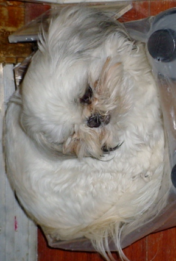
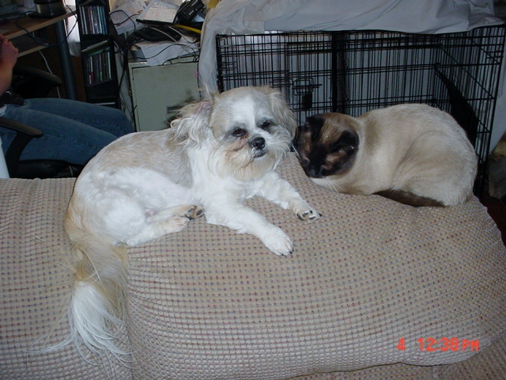
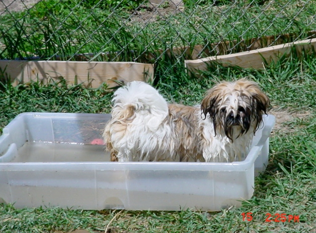
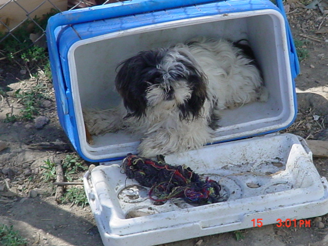

Introduction | Parents | Fur Babies | Fur Family
Star
Star is almost 8 years old, she came to live with us when she was 3 years old. She is queen of the house over all the animals. She was a good mom when she had babies. Now she enjoy the life of being retied and just being lazy around the house.
Gizmo
Gizmo is about 5 years old. He is the protecter of the house he will try and protect all the dog he think they are in danger. He produce the cutes babies. He is very helpful with the babies when mom let him help, he will clean up after them watch them and try to keep the babies out of trouble.
Little Miss
Little Miss Briget is about 2 years old. She loves to be held and cuddle. This is her first litter of babies and she had 6 of them. She is woundful mother to babies she still don't want any other animals near her babies yet. Little Miss is the odd one for the Shih Tzu breed she loves to play in water. She has her own swimming pool that she get to play in when the weather is warm. One of her favorite thing to do is jump in her swimming pool and then jump on her sister Oreo.
Oreo
Oreo is about 2 years old. She came to us from a liter we breed hear we fell in love with her and kept her. She will never know about having her own babies, but she does try to help with her sister babies when her sister is outside. Oreo like to hide she will find the oddest place to hide. She is also very mischievous, she like to find trouble. She is good about playing with her toys and if nobody can play with her she will toss the toy then go get toy herself.